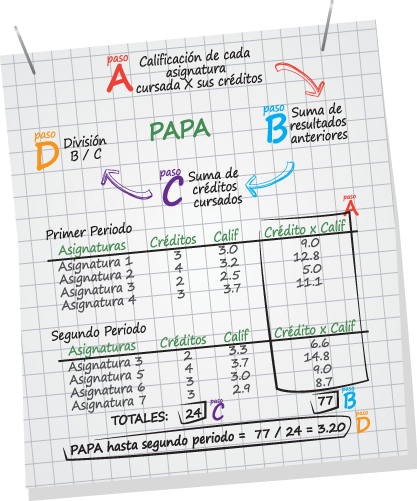

Presentación
Para medir el rendimiento académico de los estudiantes, se cuenta con dos tipos de promedios, el Promedio Académico y el Promedio Aritmético Ponderado Acumulado (PAPA). El primero se usa para la expedición de certificados a los egresados, mientras que el segundo es una medida de uso exclusivo e interno de la Universidad.
El cálculo de estos promedios se realiza al finalizar cada periodo académico. Para el cálculo del PAPA se tienen en cuenta todas las asignaturas cursadas hasta ese momento con calificación numérica (tanto las aprobadas como las no aprobadas). En cambio en el cálculo del Promedio Académico solo se tiene en cuenta la última calificación obtenida en cada una de las asignaturas. Es decir, si en un período pierdes la asignatura X y en el siguiente la apruebas, para el cálculo del PAPA se incluyen ambas calificaciones, mientras que para el PA la primera no se tiene en cuenta; solo la última.
